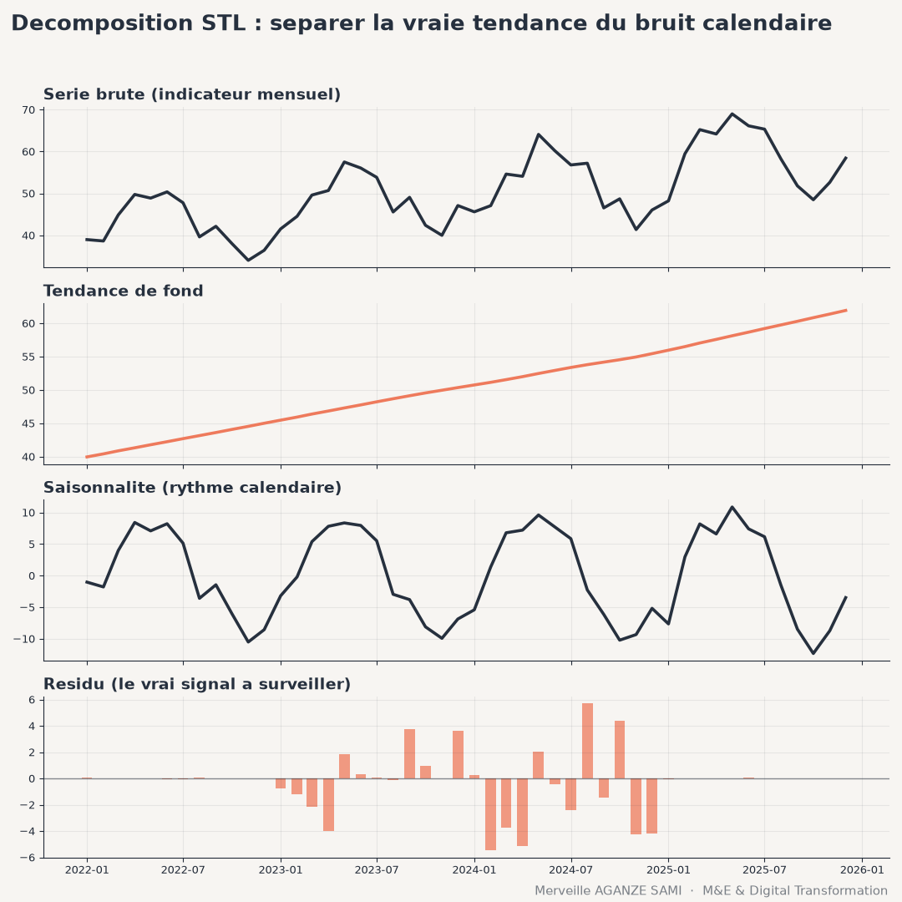

Monitoring systems most often produce monthly or quarterly series: consultations delivered, households reached, volumes collected, cases notified. These series are frequently presented in raw values, compared with the preceding month. This reading raises an interpretation difficulty: part of the observed variation stems from the calendar rather than from the intervention.
The agricultural lean season, the rainy season, the school calendar, leave periods and disbursement cycles impose a stable periodicity on field series. Comparing one month with the previous one then partly measures the gap between two positions in the annual cycle. Decomposing the series into distinct components allows what belongs to the regular rhythm to be separated from what does not.
1. The three components
A seasonal decomposition represents the observed series as a combination of three elements. The trend describes the underlying evolution once regular oscillations are smoothed out. Seasonality describes the pattern repeating at a fixed period. The remainder gathers what neither explains: it is the component carrying new information.
The combination may be additive — the three components add up — or multiplicative, where seasonal amplitude grows with the level of the series, a common situation for activity volumes. In the latter case, a prior logarithmic transformation returns to the additive case.
The principle of the STL method. Seasonal-trend decomposition by local smoothing rests on the iterative application of a locally weighted regression — the loess method (Cleveland, 1979). At each pass, the seasonal component is estimated by smoothing values holding the same position in the cycle, then removed; the trend is smoothed on the series thus corrected. Iteration continues until stabilisation (Cleveland et al., 1990).
Compared with moving-average decompositions, this approach has three properties that are useful in monitoring settings: the seasonal pattern may evolve slowly over the years rather than being assumed fixed, the seasonal period is not constrained to a predefined calendar, and a robust variant limits the influence of extreme values on the estimation of the first two components (Hyndman & Athanasopoulos, 2021).
2. The parameters to decide
- 1The seasonal period. Twelve for monthly data, four for quarterly data. It must match the cycle actually at work: in some settings the relevant cycle is agricultural rather than calendar-based.
- 2The seasonal window. It determines whether the pattern is assumed constant from year to year or allowed to drift. A fixed pattern is justified for a short series; gradual evolution suits a context whose conditions are changing.
- 3The trend window. A narrow window tracks inflections closely, at the cost of a trend absorbing part of the noise; a wide window produces a readable curve but responds late to genuine change.
- 4The robust option. It reduces the weight of atypical points in estimation. Recommended whenever the series contains one-off disruptions — an interrupted collection round, an exceptional event — that should not distort the seasonal pattern.
- 5Handling of missing values. It must be explicit and documented. Silent interpolation creates data that were never observed and distorts the estimation of the remainder.
3. Moving alert thresholds onto the remainder
The main operational benefit of decomposition lies in this shift. A threshold placed on the raw value triggers each year at the same periods, producing expected alerts and, in time, desensitising teams. A threshold placed on the remainder triggers only when the gap exceeds what trend and season explain.
Building such thresholds falls under statistical process control: the usual dispersion of the remainder is estimated over a reference period, then values departing from it beyond an agreed multiple are flagged. This approach, extensively documented in service quality monitoring, transfers directly to programme indicators (Benneyan et al., 2003). It also provides a shared reading rule: what triggers an alert is defined in advance, not judged case by case.
4. Limitations to document
- Series length. Estimating a seasonal pattern presupposes several complete cycles; below two to three years of monthly data, the seasonal component is poorly identified and absorbs part of the trend.
- Decomposition does not detect breaks. It separates components but does not test for a regime change. Where the question concerns the date of a break in trend or seasonality, dedicated methods, developed notably for satellite image time series, are more appropriate (Verbesselt et al., 2010).
- Sensitivity to outliers. Without the robust option, an erroneous value durably distorts the estimated seasonal pattern and therefore all subsequent remainders. Variants designed for noisy or irregular series exist where this risk is structural (Wen et al., 2019).
- Small counts. On series of low counts, random variability dominates and the remainder becomes hard to interpret. Aggregation to a higher geographical level is then preferable to site-by-site decomposition.
- Definition changes. A change in the collection protocol or in the indicator definition creates a discontinuity that the decomposition will attribute to the trend. Such changes must be traced in the series metadata.
5. Integration into a monitoring system
Decomposition is best computed automatically at each data refresh rather than produced occasionally for a one-off analysis. Three displays suffice: the raw series, the seasonally adjusted series, and the remainder with its control limits. The third panel becomes the reference view for performance reviews.
One communication caveat is worth anticipating. A seasonally adjusted series differs from the raw series teams are familiar with; keeping both displays side by side, with an explanatory note on the method and the parameters chosen, avoids confusion between observed and adjusted values.
Key points
- Part of monthly variation reflects the calendar rather than the performance of the intervention
- Decomposition separates trend, seasonality and remainder through iterative local smoothing
- Period, windows and the robust option are methodological decisions to document
- Alert thresholds placed on the remainder reduce alerts that recur every year
- The method does not detect breaks: other approaches are dedicated to that
An indicator that falls does not necessarily signal a weakening intervention; it may simply follow the calendar. The function of a monitoring tool is to make that distinction explicitly and reproducibly, rather than leaving it to each reader's judgement.
References
- Benneyan, J. C., Lloyd, R. C., & Plsek, P. E. (2003). Statistical process control as a tool for research and healthcare improvement. Quality & Safety in Health Care, 12(6), 458–464. doi.org/10.1136/qhc.12.6.458
- Cleveland, W. S. (1979). Robust Locally Weighted Regression and Smoothing Scatterplots. Journal of the American Statistical Association, 74(368), 829–836. doi.org/10.1080/01621459.1979.10481038
- Cleveland, R. B., Cleveland, W. S., McRae, J. E., & Terpenning, I. (1990). STL: A Seasonal-Trend Decomposition Procedure Based on Loess. Journal of Official Statistics, 6(1), 3–73.
- Hyndman, R. J., & Athanasopoulos, G. (2021). Forecasting: Principles and Practice (3rd ed.). Melbourne: OTexts.
- Verbesselt, J., Hyndman, R., Newnham, G., & Culvenor, D. (2010). Detecting trend and seasonal changes in satellite image time series. Remote Sensing of Environment, 114(1), 106–115. doi.org/10.1016/j.rse.2009.08.014
- Wen, Q., Gao, J., Song, X., Sun, L., Xu, H., & Zhu, S. (2019). RobustSTL: A Robust Seasonal-Trend Decomposition Algorithm for Long Time Series. Proceedings of the AAAI Conference on Artificial Intelligence, 33(1), 5409–5416. doi.org/10.1609/aaai.v33i01.33015409

Merveille Aganze Sami
MEL & Database Management Advisor. 9+ years of experience in monitoring & evaluation, GIS and digitalization with international organizations (GIZ, Enabel) in DR Congo.
A monitoring dashboard to make reliable?
Get in touch